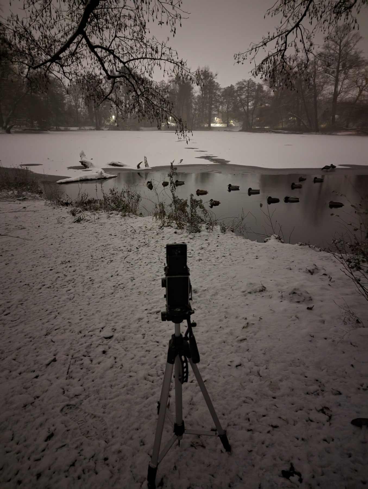
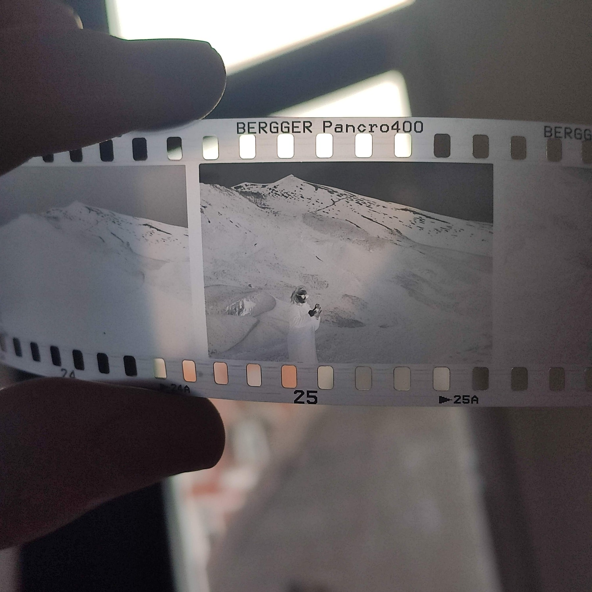
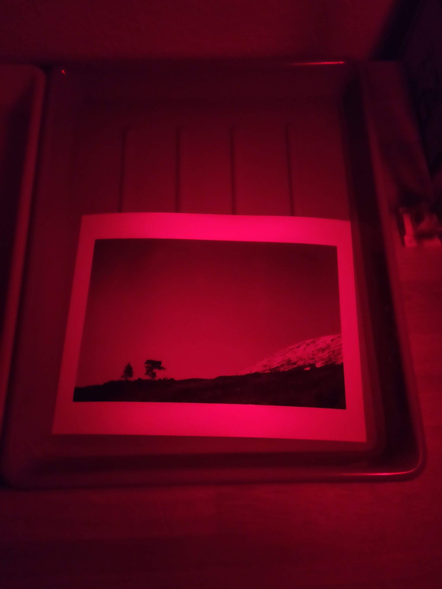
1 / 3
01 / Photography
Analog photography
From making an image to developing film and enlarging it in the darkroom, I enjoy the patient, physical process behind a photograph.
Away from the signal
Photography, roads, films, and a few things from earlier days.
01
Current interests



01 / Photography
From making an image to developing film and enlarging it in the darkroom, I enjoy the patient, physical process behind a photograph.
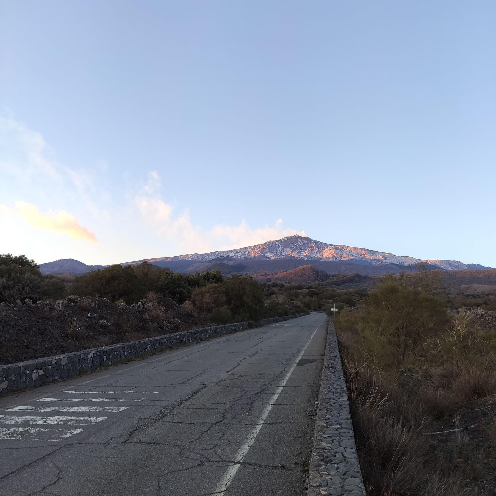
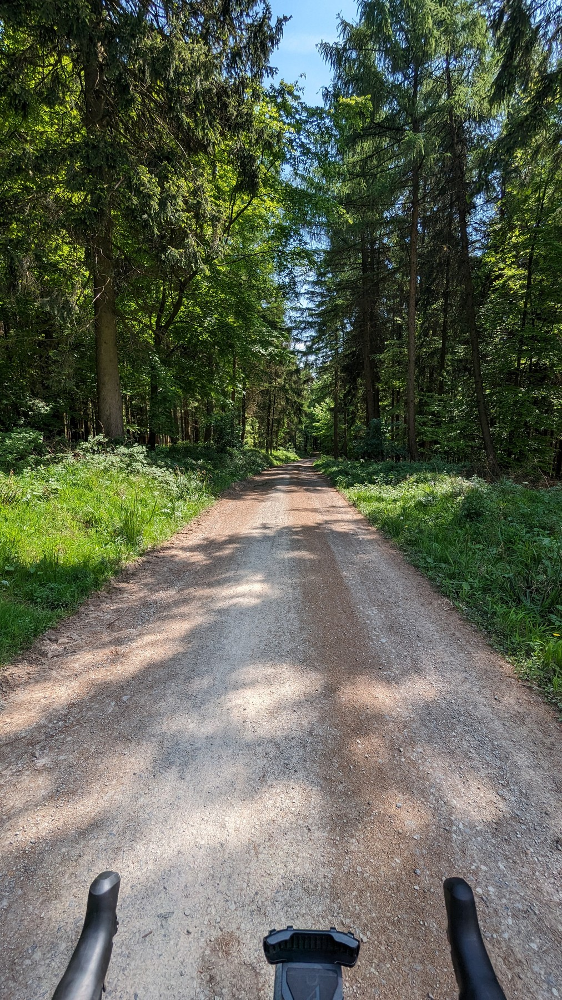
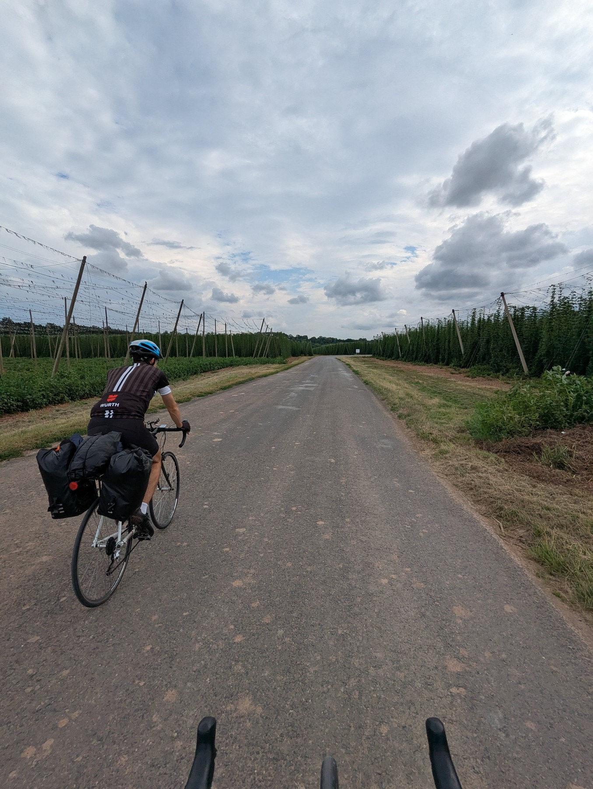
02 / Cycling
The road up Mount Etna is a favourite destination whenever I return home to Sicily.
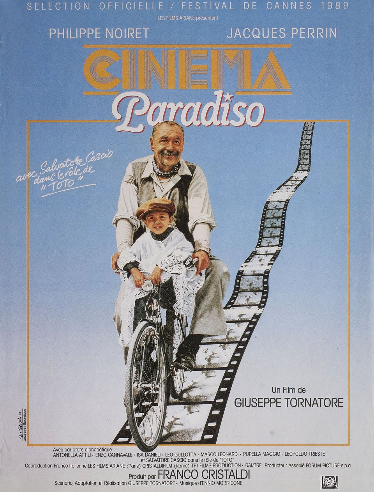
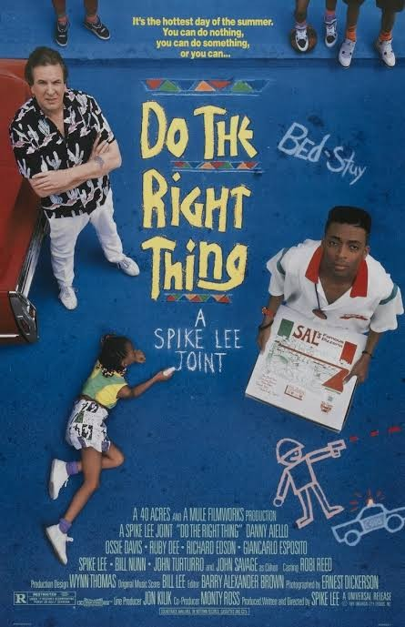
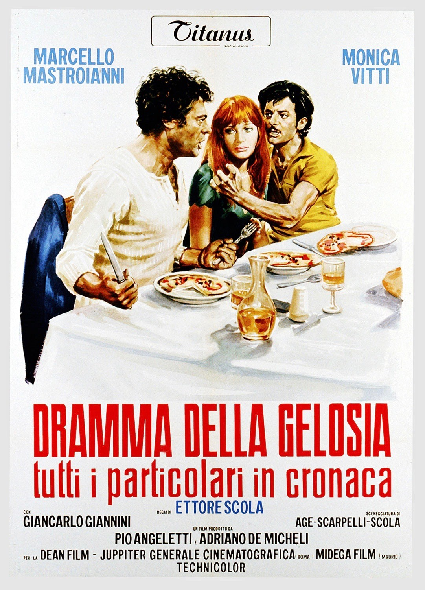
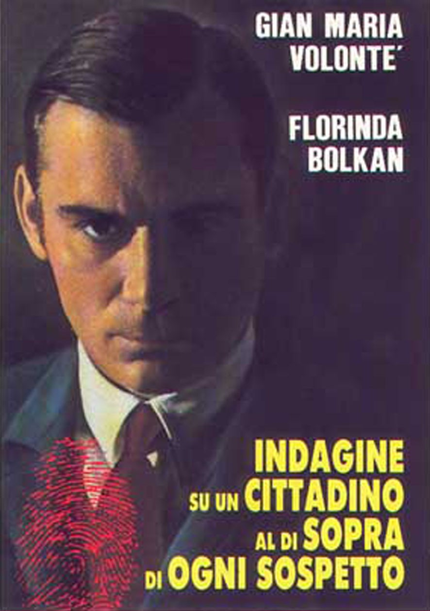
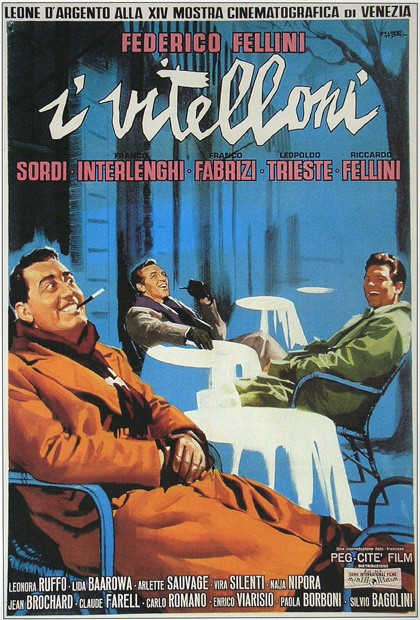
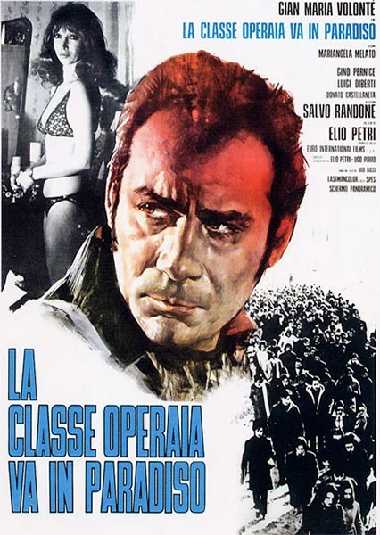
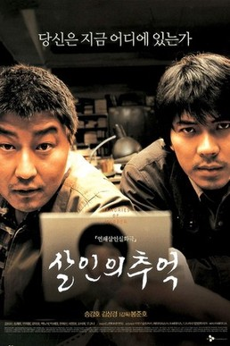
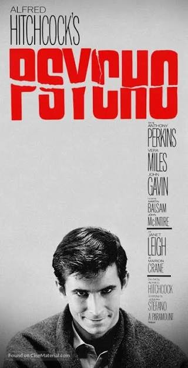
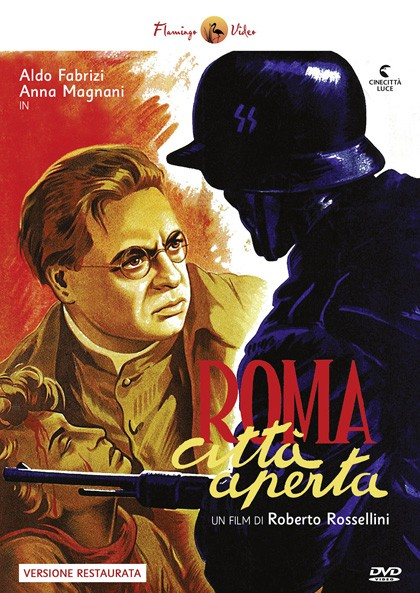
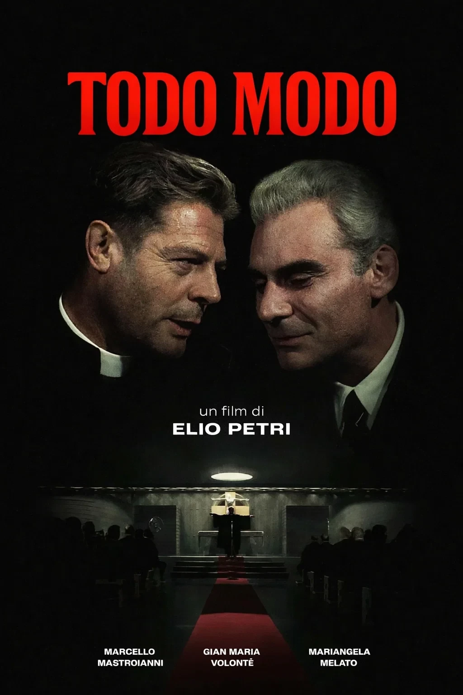
03 / Cinema
A selection of films that I return to—from Italian political cinema and neorealism to thrillers and contemporary world cinema.
02
From earlier days